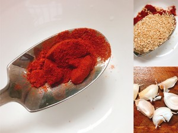

A recipe for Steamed Chicken with Chili Sauce
Steamed Chicken with Chili Sauce is a cold dish, rich in seasoning, set spicy fresh fragrant and cool in a body.Have "chi bashu three thousand li, taste pressure jiangnan twelve states" reputation.The chicken was delicious, tender and delicious.
The material prepared
1 small chicken (300g), 1 spring onion, 3 slices ginger, 1 bag of spicy sauce, a little salt, 15 prickly ash, 2 tablespoons vegetable oil.
Production steps

Defrost the chicken legs and put the cold water into the pot. Add peppercorns, star anise, spring onion, ginger slices and 1 tablespoon cooking wine.Bring to a boil, continue cooking for 5 minutes, then turn off the heat and simmer for 15 minutes.

In a bowl, add 1 tablespoon of chili powder, 1 tablespoon of cooked sesame seeds.

Heat the wok, add 3-4 tablespoons of oil, add a pinch of sichuan peppercorn, and blow out the aroma.
Pour the boiling oil into a bowl filled with garlic and chilli powder.Then add 2 tablespoons balsamic vinegar, 3 tablespoons soy sauce, 1 tablespoon sichuan peppercorn oil, and a pinch of white sugar.Finally add some salt and stir.The sauce is ready.

Remove the cooked chicken legs and soak them in cold water for 2-3 minutes while changing the water.Ice water is a plus.Put on gloves and tear small pieces of chicken legs.
Drizzle with sauce and sprinkle with coriander to taste!Soak up more flavor!A delicious chicken is done!